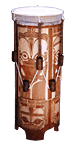

 Fa'atete: Таитянский барабан с туго натянутой мембраной. Корпус по всей поверхности украшают традиционными узорами(один из популярных мотивов в современных татуировках). Звук извлекают двумя палками.Fotutu: Раковины, иcпользовавшиеся в качестве духовых инструментов племенами доколониальной Кубы. |